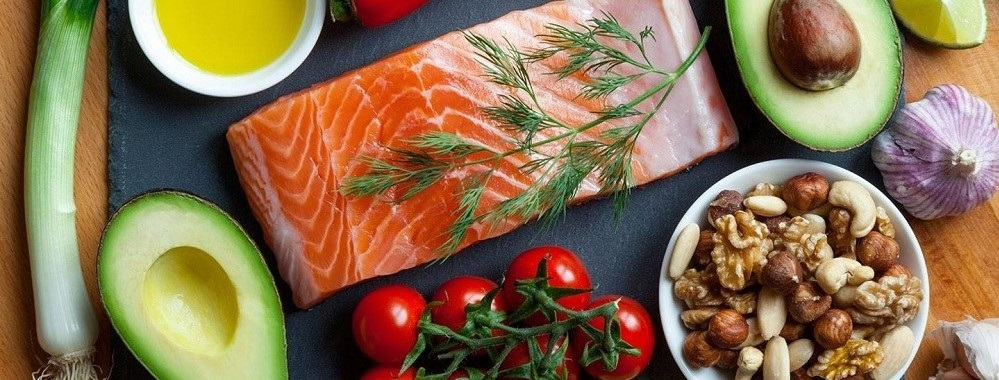

Jedina prava linija zdrave hrane u Nišu!
Ne gubite vreme – mi za Vas biramo, nabavljamo, pripremamo i dostavljamo.
Ne lišavajte se ukusa dobre hrane, da biste postali fit.

Obroci pripremljeni bez veštačkih šećera bez rafinisanih ulja, sa namirnicama bez glutena.
Dostava celodnevnih zdravih obroka.